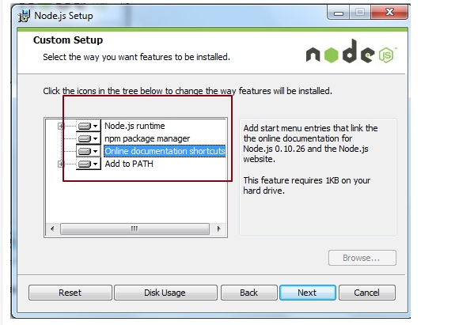

悦轻小程序
目录
常用CSS布局，样式效果，SASS语法
布局
FLEX布局
小程序中，推荐使用flex布局，兼容性良好，由于弹性布局特性，非常适合做移动端布局
Flex布局的特点:
- 任意方向的伸缩，向左，向右，向下，向上
- 在样式层可以调换和重排顺序
- 主轴和侧轴方便配置
- 子元素的空间拉伸和填充
- 沿着容器对齐
display: flex;
flex-direction: row; /* 主轴的方向 */
justify-content: center; /* 主轴居中排列方式 */
align-items: center; /* 交叉轴对齐方式 */
参考资料：
首先需要了解到div元素的类型有两大类：
块级元素（block）：块级元素自占一行，宽度占100%
比如：
body from select textarea h1-h6 html table button hr p ol ul dl cnter div
HTML行内元素（inline element）：
行内元素也叫内联元素或者内嵌元素。行内元素和其他元素都在一行上，高度、行高、内边距和外边距都不可改变。宽度是它文字或者图片的宽度，也是不可改变的。行内元素只能容纳文本或者其他行内元素。
lable span br a style em b i strong
流式布局自上而下，用于做业务意义上模块的区分，适用于简单的容器布局，比如：
对应实现布局的代码参考：
<div class="container">
<div class="banner"></div>
<div class="sprot-wrap">
<div class="sport-list"></div>
<div class="sport-detail"></div>
</div>
<div class="sprot-desc">
<div class="sport-info"></div>
<div class="info-item">
<h2>需要器械</h2>
<p>瑜伽垫</p>
</div>
<div class="info-item">
<h2>课程简介</h2>
<p>练习内容xxxx</p>
</div>
</div>
</div>
水平居中效果实现
- 文本/行内元素/行内块级元素
使用text-align: center;去实现
<div class="container">
<div class="calorie">
<span>116</span>
<span>千卡</span>
</div>
<div>
每盒（快餐饭盒）米饭热量
</div>
</div>
.container{
text-align: center;
.calorie {
span:first-child {
color: #ff508a;
font-size: 48px;
}
}
}
- 单个块级元素
在margin有节余的同时如果左右margin设置了auto，将会均分剩余空间
<div class="container">
<div class="son"></div>
</div>
.container{
.son {
width: 100px;
height: 100px;
margin: 0 auto;
background-color: red;
}
}
- 多个块级元素
<div class="container">
<div class="son"></div>
<div class="son"></div>
<div class="son"></div>
<div class="son"></div>
<div class="son"></div>
</div>
.container{
text-align: center;
.son {
display: inline-block;
width: 100px;
height: 100px;
margin: 0 auto;
padding: 0 10px;
background-color: red;
}
}
- 使用绝对定位实现
<div class="container">
<div class="main">
<img class="img" src="https://images.unsplash.com/photo-1517636480979-fdfab979b270?ixlib=rb-0.3.5&q=85&fm=jpg&crop=entropy&cs=srgb&ixid=eyJhcHBfaWQiOjE0NTg5fQ&s=aeef48b4588e641bbbece1fd0ee0c1de" alt="">
</div>
</div>
.container {
}
.container .main {
height: 200px;
width: 200px; /*定宽*/
margin: 0 auto;
position: relative; /*父级相对定位*/
background-color: #f00;
}
.container .main .img {
position: absolute;
left: 50%;
transform: translateX(-50%); /*自身高度一半,等同于margin-left: -50px;*/
height: 100px;
}
这种定位模式在子元素属于宽度未知的块级元素的时候，贼好用
缺点：代码较多；脱离文档流；使用margin-left需要知道宽度值；使用transform兼容性不好（ie9+）
- 任意个元素(flex)
<div class="container">
<span>测试1</span>
<div class="info"></div>
<img class="img" src="https://images.unsplash.com/photo-1517636480979-fdfab979b270?ixlib=rb-0.3.5&q=85&fm=jpg&crop=entropy&cs=srgb&ixid=eyJhcHBfaWQiOjE0NTg5fQ&s=aeef48b4588e641bbbece1fd0ee0c1de" alt="">
</div>
.container {
display: flex;
justify-content: center;
align-items: center;
}
.container .info {
width: 100px;
height: 100px;
background: #ff508a;
}
.container .img {
height: 100px;
}
flex实现居中非常方便，例如上面简单的两行属性设置就实现了水平居中和垂直居中
垂直居中效果实现
- 单行文本/行内元素/行内块级元素
原理：line-height的最终表现是通过inline box实现的，而无论inline box所占据的高度是多少（无论比文字大还是比文字小），其占据的空间都是与文字内容公用水平中垂线的。
<div class="container">
<span>测试1</span>
<span>测试1</span>
<span>测试1</span>
</div>
.container{
height: 150px;
line-height: 150px; /*与height等值*/
background: #ff508a;
span {
font-size: 30px;
}
}
- 多行文本/行内元素/行内块级元素
原理：通过行内元素的vertical-align: middle;属性实现居中
缺点：子元素类型需要是行内元素，设置vertical-align: middle;,并且需要使用font-size: 0;消除行内元素的默认边距问题，稍显麻烦
<div class="container">
<span>测试1</span>
<span>测试1</span>
<img class="img" src="https://images.unsplash.com/photo-1517636480979-fdfab979b270?ixlib=rb-0.3.5&q=85&fm=jpg&crop=entropy&cs=srgb&ixid=eyJhcHBfaWQiOjE0NTg5fQ&s=aeef48b4588e641bbbece1fd0ee0c1de" alt="">
<div class="green"></div>
</div>
.container{
height: 150px;
background: #ff508a;
vertical-align: middle;
font-size:0; /* 消除行内元素的边距问题 */
span {
font-size: 30px;
vertical-align: middle;
}
img {
height: 100%;
vertical-align: middle;
}
.green {
display: inline-block;
width: 100px;
height: 50%;
background-color: green;
vertical-align: middle;
}
}
- 任意个元素(flex)
推荐使用flex设定交叉轴align-items: center;实现居中，简单易用，不必考虑元素的类型
.container {
display: flex;
justify-content: center;
align-items: center;
}
绝对定位与相对定位
流式布局实现的是从左到右，自上而下的布局方式，所以当内容处于容器的左侧，上方的时候，不用考虑绝对布局，当子元素处于盒子模型的下方，右侧，或者特定的位置的时候，这时候就要使用到绝对定位，指定子元素相当于父元素的绝对位置
<div class="contaner">
<div class="content1">
<span>我是内容二</span>
</div>
<div class="content2">
<span>我是内容二，当父元素没设置相对定位的时候，会一直往上找，直到找到相对定位的元素或者根元素html</span>
</div>
</div>
.contaner {
height: 100vh;
background: #f1f1f1;
.content1 {
position: relative;
height: 200px;
span {
position: absolute;
right: 10px;
bottom: 50px;
}
}
.content2 {
height: 200px;
span {
position: absolute;
right: 10px;
bottom: 50px; /* 因为content2没有设置相对定位，所以找到html */
}
}
}
背景图的使用
有个原则，当图片属于内容的一部分，使用img，当图片不属于内容，辅助展示效果的时候，使用backage-image，内容两个字要圈出来考
比如上图就属于背景图实现，参考代码
<div class="container">
<div class="content">
<div class="calorie">
<span>116</span>
<span>千卡</span>
</div>
<div class="record">
</div>
</div>
</div>
.container {
min-height: 100vh;
background: url('https://images.unsplash.com/photo-1517636480979-fdfab979b270?ixlib=rb-0.3.5&q=85&fm=jpg&crop=entropy&cs=srgb&ixid=eyJhcHBfaWQiOjE0NTg5fQ&s=aeef48b4588e641bbbece1fd0ee0c1de') no-repeat top center / contain;
padding: 100px 20px 0 20px;
.calorie {
color: #ffffff;
text-align: center;
span:first-child {
color: #ff508a;
font-size: 48px;
}
}
.record {
width: 100%;
height: 500px;
background-color: #ffffff;
border-radius: 10px;
}
}
关于background的语法
background-repeat: repeat; /* 背景重复渲染填充满整个容器 */
background-color: #fff; /* 背景颜色，可以和背景图搭配使用 */
background-image: url('url'); /* 背景图加载路径 */
background-size: 100% auto; /* 背景图尺寸，宽高 */
background-position: center center; /* 背景图水平定位，垂直定位 */
/* 简写 */
/* 颜色 背景图路径 是否重复渲染 背景图定位 / 背景图尺寸 */
background: #fff url('url') no-repeat center center/ 100% auto;
动画的实现
一般前端实现动画，主要用到css的transition和animation进行动画的实现，这里我们主要介绍transition
CSS3新增动画属性，transition(过渡)属性介绍，其作用就是：平滑的改变CSS的属性值
transition 属性是一个简写属性，用于设置四个过渡属性：
transition-property 指定过渡的性质，(如：background属性，默认值为all)
transition-duration 指定当前过渡的持续时间
transition-timing-function 延迟触发过渡时间
transition-delay 指定过渡类型(有：linear | ease | ease-in | ease-out | ease-in-out)
// all所有的css属性都拥有过渡，过渡时间为1s，延迟3s触发动画，执行匀速触发函数
transition: all 1s 3s linear;
关闭按钮旋转动画
<div class="container">
<div class="content">
<div class="calorie">
<span>116</span>
<span>千卡</span>
</div>
<div class="record">
<span class="close"></span>
</div>
</div>
</div>
.container {
min-height: 100vh;
background: url('https://images.unsplash.com/photo-1517636480979-fdfab979b270?ixlib=rb-0.3.5&q=85&fm=jpg&crop=entropy&cs=srgb&ixid=eyJhcHBfaWQiOjE0NTg5fQ&s=aeef48b4588e641bbbece1fd0ee0c1de') no-repeat top center / contain;
padding: 100px 20px 0 20px;
.calorie {
color: #ffffff;
text-align: center;
span:first-child {
color: #ff508a;
font-size: 48px;
}
}
.record {
position: relative;
width: 100%;
height: 500px;
background-color: #ffffff;
border-radius: 10px;
.close {
position: absolute;
top: 15px;
right: 15px;
width: 15px;
height: 10px;
transition: transform .5s linear;
&:hover {
transform: rotate(360deg);
}
&:before, &:after{
content: '';
display:block;
position:absolute;
top: 50%;
left:0;
transform: translateY(-50%);
width:100%;
height: 2px;
background: #333;
}
&:before {
transform: rotate(45deg);
}
&:after {
transform: rotate(-45deg);
}
}
}
}

箭头旋转动画
<div class="container">
<div class="content">
<div class="calorie">
<span>116</span>
<span>千卡</span>
</div>
<div class="record">
<div class="arrow"></div>
</div>
</div>
</div>
.container {
min-height: 100vh;
background: url('https://images.unsplash.com/photo-1517636480979-fdfab979b270?ixlib=rb-0.3.5&q=85&fm=jpg&crop=entropy&cs=srgb&ixid=eyJhcHBfaWQiOjE0NTg5fQ&s=aeef48b4588e641bbbece1fd0ee0c1de') no-repeat top center / contain;
padding: 100px 20px 0 20px;
.calorie {
color: #ffffff;
text-align: center;
span:first-child {
color: #ff508a;
font-size: 48px;
}
}
.record {
position: relative;
width: 100%;
height: 500px;
background-color: #ffffff;
border-radius: 10px;
.arrow {
position: absolute;
top: 15px;
right: 15px;
width: 0;
height: 0;
border-width:0 10px 10px;
border-style:solid;
border-color:transparent transparent #333;/*透明 透明 灰*/
transform-origin: center center;
transition: transform .5s linear;
&:before {
content: '';
display:block;
position: absolute;
top: 0;
left: 0;
width: 0;
height: 0;
border-width:0 10px 10px;
border-style: solid;
border-color:transparent transparent #fff;
transform: translate(-50%, 2px);
z-index: 2;
}
&:hover {
transform: rotate(180deg);
}
}
}
}

关于padding、margin的使用
关于padding、margin的使用，是通过内容来判定的
块与块之间的边距使用margin设置
块里面的内容使用padding设定
<div class="container">
<div class="first"></div>
<div class="second">
<span>这里是内容</span>
</div>
</div>
.container {
height: 100vh;
background: #f1f1f1;
padding: 0 20px;
.first {
height: 60%;
background: #ff508a;
}
.second {
height: 200px;
background: #fff;
padding: 20px;
margin-top: 20px;
border-radius: 10px;
}
}
开发环境准备
nodejs环境配置
nodejs环境配置分window和mac环境配置，主要安装nodejs环境和npm包管理器，自己根据电脑环境选择以下环境配置
为了环境的统一，避免出现配置不一致的问题，我们选择的是node 8.11.3版本，对应的npm版本是5.6.0
window
打开NODE JS 下载
选择自己电脑对应的位数下载
步骤 1 : 双击下载后的安装包如下所示：
步骤 2 : 点击以上的Run(运行)，将出现如下界面：
步骤 3 : 勾选接受协议选项，点击 next（下一步） 按钮 :

步骤 4 : Node.js默认安装目录为 "C:\Program Files\nodejs" , 你可以修改目录，并点击 next（下一步）：
步骤 5 : 点击树形图标来选择你需要的安装模式 （全部勾上）, 然后点击下一步 next（下一步）

步骤 6 :点击 Install（安装） 开始安装Node.js。你也可以点击 Back（返回）来修改先前的配置。 然后并点击 next（下一步）：
点击 Finish（完成）按钮退出安装向导。
检查Node.js版本
node -v
mac
安装 nvm
curl -o- https://raw.githubusercontent.com/creationix/nvm/v0.31.3/install.sh | bash
安装 nodejs以及npm
nvm install v8.11.3
nvm use v8.11.3
nvm alias default v8.11.3 # 设置默认 node 版本为 0.12.7
检查Node.js版本，可以输出正确的版本号v8.11.3
node -v
GIT项目下载
把项目（light）克隆到本地，记住路径，切换到dev分支
git checkout dev
项目拉取完毕后，请认真阅读readme.md文件，按照项目说明配置git submodule共用模块
VSCODE开发工具
下载安装完VSCODE，打开插件市场，搜索Settings Sync插件安装，安装完毕重启
同步开发环境
打开插件：
window下快捷键ctrl+shift+p，mac下cmd+shift+p，输入sync，选择download Settings
GitHub Token: c23a59a3759bd08e4b9acbf5c7d3f237bdd21ef0
GitHub Gist: 2b16bfa2e28e632f5ba90e4472deee70
重启后再次同步，直到提示是最新的设置时候即可
在VSCODE打开上一步从git克隆下来的项目（light）

打开控制台，快捷键 ctrl + ` 打开控制台，安装依赖，安装完毕运行开发环境
npm install
npm run dev
小程序开发者工具
下载地址：小程序开发者工具
小程序打开扫码登录，点击小程序项目，打开悦轻（light）项目，进行预览
PS： 小程序开发者工具只是作为一个预览工具，我们开发使用VSCODE，即写代码使用VSCODE，使用开发者工具看效果（推荐双屏提高开发效率），当VSCODE的悦轻项目运行了npm run dev调试模式，所有的页面编码都会热更新到开发者工具实时预览
项目说明
submodule 子模块引入
submodule mpvue分支，是专门针对使用mpvue编写的小程序提供了一系列共用组件，登录授权，工具库的子模块，存放目录为.src/plugin/common中
如何使用？
在项目的.src/App.vue中集成，代码示例如下
import consts from './consts'
import utils from './utils'
// 引入plugin/common子模块
import * as pluginConsts from './plugin/common/consts'
import * as api from './plugin/common/assets/js/api'
import * as user from './plugin/common/utils/user'
import common from './plugin/common/utils/common'
import flyio from './plugin/common/utils/flyio'
export default {
created() {
// 注入到wx全局对象中
wx.config = {
...pluginConsts,
...consts
}
wx.utils = {
...utils,
common
}
wx.user = user
wx.flyio = flyio
wx.api = api
wx.global = {
// 全局变量定义在这里
}
wx.utils.log('main app is bootstrap')
}
}
这段代码做了以下几个事情：
- 合并了项目的consts和子模块的consts常量
- 合并了项目的utils和子模块的utils工具类
- 获取用户信息的方法注入到了wx.user中
- 约定了全局变量wx.global
上面说了一大堆原理，那么到底我们应该怎么用呢？
- 常量
XXX定义在src/consts/index.js文件中，不需要在使用的地方import，只需要使用wx.config.XXX获取 常用工具可以使用wx.utils调用，具体有哪些方法，可以在控制台输入查看
打印日志的方法，严禁使用
console.log，需要使用wx.utils.log，此方法注入了打印日志的开关，方便调试全局变量，比如多个页面共享的变量，可以定义修改
App.vue的global定义引入了
minapp-api-promise，所有小程序的api都改成this.$wxp.方式调用，使用async await同步写法
接下来以微信提供的数据存储api
此api是异步函数，那么要使用async await写法，如下面所示
const storage = await this.$wxp.setStorage(key)
- toast弹窗，使用
this.$toast('我是内容')
引入图片路径
@import '@/assets/scss/common.scss';
background: url($FILE_HOST + 'me_ic_refresh.png') no-repeat 16rpx center/38rpx 38rpx;
关于单位的使用
我们小程序严格要求按照设计稿1:1还原，小程序官方文档要求使用rpx做自适应调整，所以我们使用rpx作为标准的单位，zeplin中使用2x的750宽度的标准像素，标注里面是多少px，我们就写成多少rpx即可
zeplin项目像素设置
小程序目录解析
src 项目源码
|-- assets 项目资产，css,font,img,js 一些全局和公用的静态内容会放在这个文件夹
|-- components 公用组件
|-- -- measure 刻度尺组件
|-- -- radio 单选组件
|-- -- tab 组件
|-- consts 常量
|-- plugin 第三方vue插件和其他
|-- pages 页面，每个页面有固定的结构(必须有main.js文件)，参照index文件夹
|-- -- index 模块目录
|-- -- pages 子模块目录
|-- -- -- assets 资源文件夹，包含api.js/utils.js，图片资源不允许防止在此目录，必须上传到oss后使用https地址
|-- -- -- index.vue 页面
|-- -- -- main.js 小程序
|-- store vuex 状态管理
|-- utils 通用工具包
|-- App.vue
|-- main.js
页面人员分工
|--登录授权（张振飞）
|--共用组件（张振飞）
|----刻度尺组件（measure）
|----tab组件（tab）
|----radio单选组件（radio）
|--悦轻（邓其鹏，吴利民协助）
|----悦轻主页（light-index）（邓其鹏，吴利民协助）
|----记录体重（weight-record）（邓其鹏，引用刻度尺组件）
|----记录饮食列表（diet-record）（黄天德，吴利民协助）
|----记录饮食餐次弹出框（diet-record）（黄天德，引用刻度尺组件）
|----查看食谱详情热量数据（diet-detail）（杨建，吴利民协助）
|--悦动（黄宏敏，张振飞协助）
|----14天运动方案（sport-plan）（唐春然，参考d28运动方案列表页面布局）
|----动作详解（action-explain）（罗小行，参考轻加脂肪秤小程序体重分析页面布局）
|----运动详情播放（sport-detail）（黄宏敏，参考d28运动播放逻辑，改造成mpvue语法）
|--悦知（吴利民）
|----悦知主页（light-guide）【防弹咨询，微百科】（卢警校，使用共用组件tab）
|----咨询详情（吴利民）
|--悦己（light-self）（刘远霖，张振飞协助）
|----个人信息（profile）（刘远霖）
|----数据中心（data-center）（张振飞）
|------体重（张振飞）
|------运动（张振飞）
|------饮食（张振飞）
|----轻加优选（拉起轻加商城小程序）
* 注意，所有展开，收回的动作必须要动画过渡
刻度尺组件（张振飞）
tab组件（张振飞）
radio单选组件（张振飞）